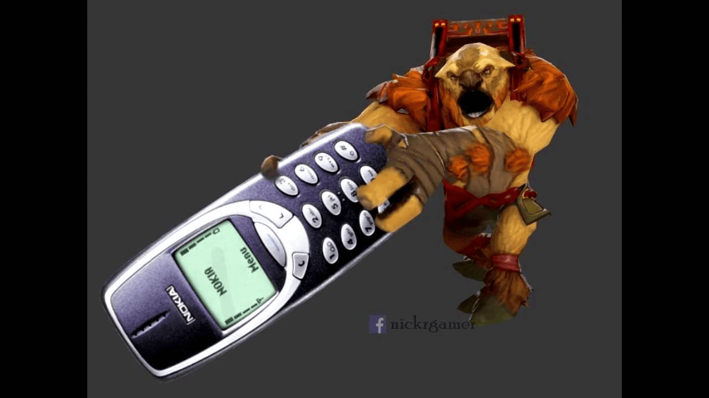

Earthshaker

Скиллы
-
Скилл 1: Fissure - Описание: Создает стену из камней, блокируя врагов и
нанося урон.
-
Скилл 2: Enchant Totem - Описание: Увеличивает урон от следующей атаки и
оглушает врагов.
-
Скилл 3: Aftershock - Описание: Наносит урон и оглушает врагов после
использования Fissure.
-
Ультимейт: Echo Slam - Описание: Наносит урон всем врагам в области,
основываясь на количестве врагов.
Как играть
Стратегия игры за Earthshaker: Используйте Fissure для контроля врагов и
Echo Slam для нанесения урона в командных боях. Играйте в команде и
старайтесь инициировать бои.
Назад к списку персонажей